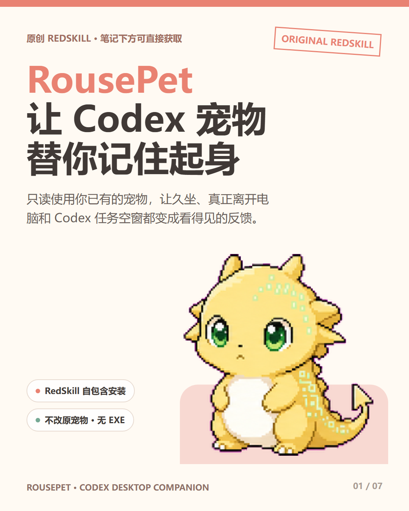
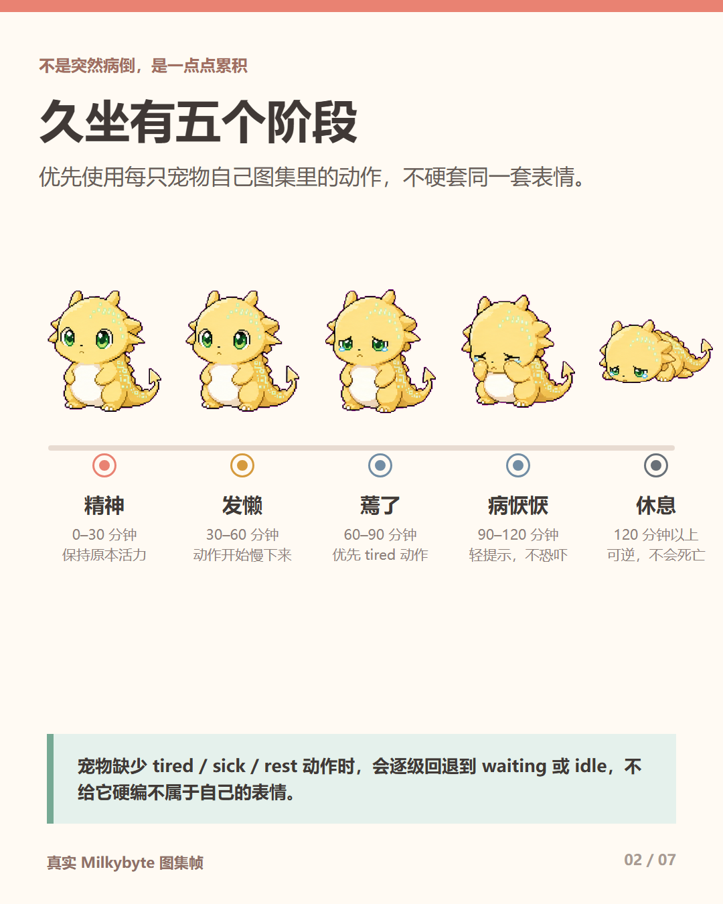
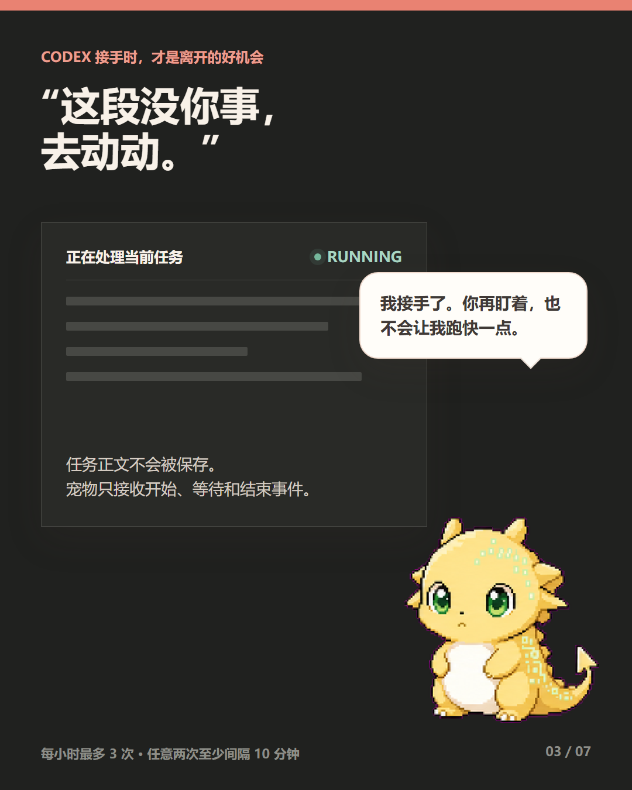
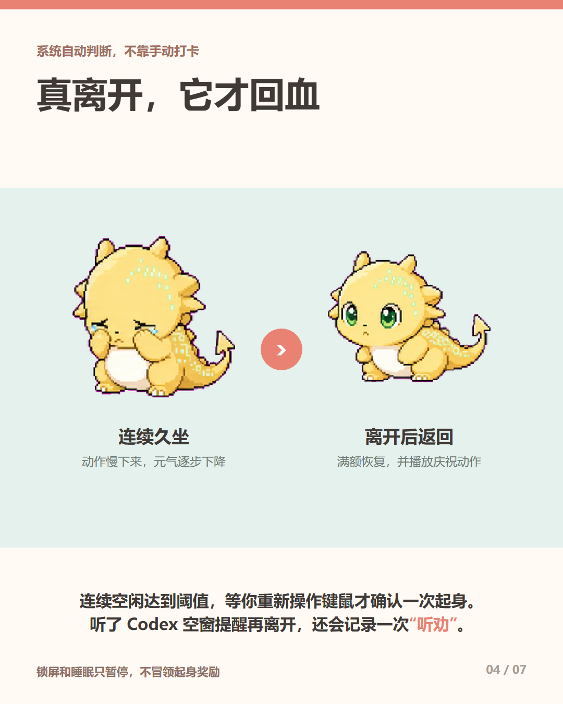
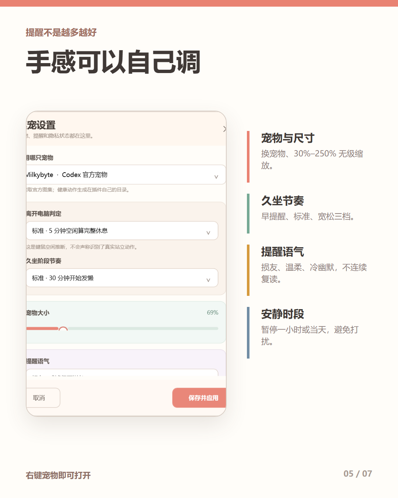
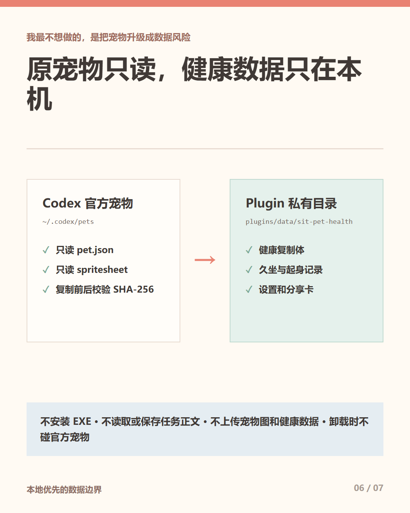
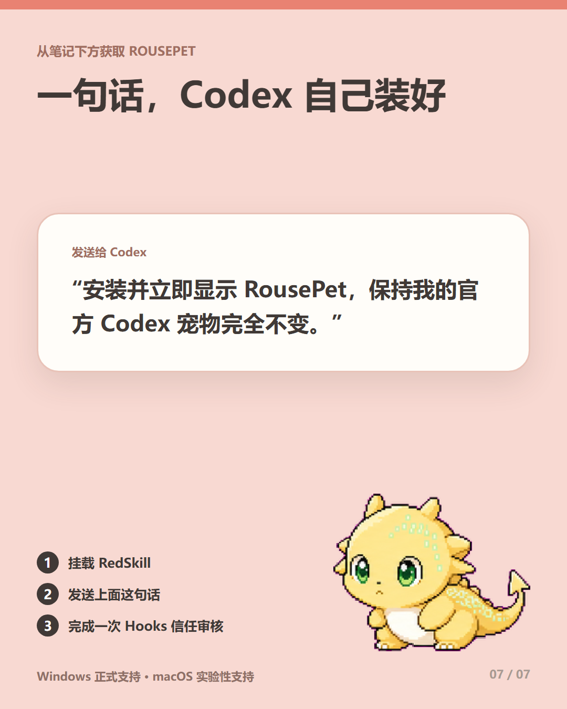

RousePet
小红书发布说明
让用户自己的 Codex 宠物替他们记住起身：久坐会逐级没精神，真正离开电脑会恢复，Codex 接手任务时还会提醒用户利用空窗活动。
RousePet 简介
RousePet 不是一只固定形象的桌宠，而是为用户自己的 Codex 宠物增加久坐反馈的 RedSkill。它只读扫描 /hatch 生成的 pet.json 与 spritesheet，把同款形象复制进 Plugin 私有目录，再根据系统键鼠空闲时间驱动久坐、恢复和 Codex 空窗提醒。没有官方宠物时，也可以用一句描述或参考图在私有目录创建新宠物。
主要功能
读取用户自己的宠物
支持 CODEX_HOME/pets 和 ~/.codex/pets，多宠物可选择；源文件安装前后校验 SHA-256。
五级久坐状态
0/30/60/90/120 分钟依次为精神、发懒、蔫了、病恹恹、休息。最差状态可逆，不出现死亡。
按宠物特性映射动作
优先使用原图集的 idle、waiting、tired、sick、rest；缺少动作时回退到相近原动作，不强造统一哭泣表情。
自动判断真正起身
读取系统键鼠空闲时间。短暂离开部分恢复；连续空闲达到阈值并重新操作后，才确认一次完整起身。
Codex 空窗提醒
Codex 接手任务且用户已经久坐时，宠物提醒利用等待时间活动；真离开后记录“听劝”并庆祝。
克制的本地提醒
损友、温柔、冷幽默三种语气；所有主动提醒每小时最多 3 次，任意两次至少间隔 10 分钟。
没有宠物也能开始
提供一句描述或参考图，Skill 会生成、校验并打包到 Plugin 私有 custom-sources，不写官方宠物目录。
桌宠基本交互
支持点击庆祝、拖动、30%–250% 无级缩放、右键设置、暂停提醒、换宠物和生成分享卡。
别人如何使用
安装并立即显示 RousePet，保持我的官方 Codex 宠物完全不变。- 从小红书笔记下方获取并挂载 RedSkill。
- 在 Codex 里发送上面这句话。
- Codex 从 RedSkill 包内注册本地 Plugin，不访问 GitHub，不下载 EXE。
- 安装结束后桌宠立即出现；多宠物时进入选择器，没有宠物时进入创建流程。
- 未来第一次触发 Plugin Hooks 时，用户完成一次 Codex 官方信任审核。
- 右键宠物可调整尺寸、阶段节奏、离开电脑阈值、提醒语气和安静时段。
五阶段设计
| 连续活跃久坐 | 阶段 | 宠物表现 |
|---|---|---|
| 0–30 分钟 | 精神 | 保持原宠物 idle，不制造焦虑。 |
| 30–60 分钟 | 发懒 | waiting 慢放，动作开始收敛。 |
| 60–90 分钟 | 蔫了 | 优先 tired；没有则回退 waiting/idle。 |
| 90–120 分钟 | 病恹恹 | 优先 sick，以动作和克制提示为主。 |
| 120 分钟以上 | 休息/罢工 | 优先 rest；没有则原地休息，可逆、无死亡。 |
数据与安全边界
- 官方
pet.json和 spritesheet 只读，复制前后校验哈希。 - 复制体、健康状态、设置、自定义宠物和分享卡只写 Plugin 私有目录。
- 不安装 EXE，不修改 Codex 配置，不上传宠物图像和健康数据。
- Hooks 只处理开始、等待和结束事件，不读取或保存任务正文。
- 卸载只删除自己的运行进程和私有数据，不删除
~/.codex/pets。
小红书标题、正文和标签
推荐标题
我做了个会替你记住起身的 Codex 宠物
备选标题
- RousePet：你越久坐，它越没精神
- Codex 接手任务后，我的宠物开始赶我走
- 一个不靠打卡的久坐提醒 RedSkill
发布正文
标签
7 张发布图片与具体位置
小红书按 01 到 07 的顺序上传。以下路径均为当前电脑上的绝对位置。

01 · RousePet 封面
第一眼先看到品牌名和核心主张，再用角标说明它是原创 RedSkill。
E:\gpt\projects\rousepet-release-v1.1.0\xiaohongshu\01.png
02 · 五阶段机制
证明状态是渐进的，并说明不同宠物会使用自己的动作。
E:\gpt\projects\rousepet-release-v1.1.0\xiaohongshu\02.png
03 · Codex 空窗提醒
展示产品差异点：Codex 接手工作时，宠物催用户离开电脑。
E:\gpt\projects\rousepet-release-v1.1.0\xiaohongshu\03.png
04 · 起身恢复
说明系统如何判断真实离开，以及返回后的庆祝反馈。
E:\gpt\projects\rousepet-release-v1.1.0\xiaohongshu\04.png
05 · 设置与可调参数
展示真实设置页，证明不是概念稿。
E:\gpt\projects\rousepet-release-v1.1.0\xiaohongshu\05.png
06 · 隐私边界
回答用户最关心的“会不会改坏原宠物、会不会读取任务”。
E:\gpt\projects\rousepet-release-v1.1.0\xiaohongshu\06.png
07 · 获取和安装
给出拿到 RedSkill 后要发送给 Codex 的一句话。
E:\gpt\projects\rousepet-release-v1.1.0\xiaohongshu\07.png发布所需文件
| RedSkill 上传包 | E:\gpt\projects\rousepet-release-v1.1.0\rousepet-redskill-v1.1.0.zip |
|---|---|
| 校验文件 | E:\gpt\projects\rousepet-release-v1.1.0\rousepet-redskill-v1.1.0.zip.sha256 |
| 小红书图片目录 | E:\gpt\projects\rousepet-release-v1.1.0\xiaohongshu |
| GitHub Release | https://github.com/onebluecloud/sit-pet-health/releases/tag/v1.1.0 |